The preparation of the first update of the Determined National Contribution of Honduras (NDC-HN) was coordinated by the Secretariat of Natural Resources and Environment (MiAMbiente +) through the National Directorate of Climate Change.
For the preparation of this publication, technical and financial support was obtained from the United Nations Development Program (UNDP) through the Climate Promise Project.
In 2015, as the Government of Honduras, together with all the nations of the world, we participated in a historic conference to achieve the Paris Agreement, an agreement of hope for life on our planet and the well-being of our peoples.
At that time, we highlighted the high vulnerability of our country based on science and what the facts told us: losses and damages associated with the adverse effects of climate change were already a constant for us. In 1998, Hurricane Mitch affected a quarter of our economy and, even more seriously, we lost more than 7,000 lives; positioning ourselves for two consecutive decades as one of the countries most impacted by climate phenomena, according to the GermanWatch Climate Risk Index.
In Honduras the climate emergency is critical: we face extreme droughts to extreme floods. Recurringly allocating over the years, considerable resources in timely actions for emergency care.
The year 2020 marked the history of our country significantly. In addition to the crisis caused by COVID-19, our people once again suffered the impact of climatic phenomena with tropical storms Eta and Iota. Around 3,900,000 Hondurans were affected and 95 people lost their lives. The economic losses are in the order of more than two thousand one hundred and seventy million dollars (US $ 2,170 million).
The main damages caused are in the social sector (school, hospital and housing infrastructure), the productive sector (agriculture, tourism, industry and commerce), the infrastructure sector (water and sanitation systems, roads, bridges and energy), in addition of the affectation of diverse ecosystem services. The damage count registered 92,646 homes, 174 collapses, 534 schools, 130 bridges, 921 roads, 79 isolated communities, 96,649 people in shelters and the total loss of 300 homes.
Honduras's contribution to global emissions is less than 0.05%, an amount that cannot be compared with the suffering of our people and our families, given the losses and damages that are the consequence of a global crisis of common responsibilities, but clearly differentiated: the highest price is paid by the most vulnerable and least developed countries.
It is in this context that Honduras presents the update of its National Determined Contribution (NDC), reaffirming our commitment to greater ambition and the primary objective of developing resilience and protecting our communities, promoting related adaptation and mitigation actions. to the Sustainable Development Goals.
This is the result of a highly participatory process, which reflects the contributions of different institutional and private actors, organized civil society, especially vulnerable groups such as women, youth, and indigenous and Afro-Honduran peoples (PIAH). Also counting on the support of sector specialists for data analysis and guidance in decision-making.
As president of one of the most vulnerable nations in the world, I want to say that for us climate change is a survival issue and currently one of the main causes of human displacement. Therefore, under the premise "it is cheaper to invest in preventing damage or at least minimizing it, than cleaning it up", we reiterate our strong call to developed and industrialized countries to significantly increase their financing flows, and make available to the countries vulnerable, as is the case of Honduras, funds for adaptation and resilience initiatives, which allow us to continue in the fight against climate change. So that all together we fight the injustice that the countries that contribute the least to the deterioration of the environment are the most affected. This mission belongs to everyone.
The so-called “dry corridor” is a successful model of climate action that is managing to challenge climate change thanks to the joint and active work of affected communities, national institutions and international cooperation, with comprehensive programs for the development of their resilience capacity. .
Honduras is privileged. 56% of our territory is covered by forests, with unique biodiversity not only for the region but for the entire world: La Mosquitia, of which the Río Plátano Biosphere is part, declared a World Heritage Site by UNESCO, is it resembles a small Amazon in Central America among many other natural resources and protected areas.
Finally, a hopeful look towards the future: a green and sustainable recovery is possible, focusing our efforts on programs for the good management of our water resources, agroforestry systems, intelligent irrigation systems, forest restoration, among other innovative measures that help to the social and economic development of our people.
The climate emergency is a reality. We must act now!
Juan Orlando Hernandez Alvarado
Republic President
May, 2021
The Government of the Republic of Honduras, through the Secretary of State for Natural Resources and Environment ( MiAmbiente + ) and as a Focal Point before the United Nations Framework Convention for Climate Change (UNFCCC), presents the update of the Nationally Determined Contribution (NDC) of the Republic of Honduras, for its first review, incorporating five components that have guided the work at the national, sectoral and territorial levels: i) Social inclusion, ii) Mitigation of Greenhouse Gases (GHG), iii) Adaptation to Climate Change, iv) Financing, and v) Reporting and Verification Mechanism (MRV).
Likewise, we consider it important to emphasize the Social Inclusion component of the NDC, called gender equality and equity, young people and indigenous and Afro-Honduran peoples in the context of Honduras, in order to establish the gaps and the differentiated impacts caused by the change. climate in the population.
It is a priority for Honduras to take measures that guide it towards a low-carbon development, given the economic and social vulnerability to meteorological events and their associated costs; including attention to disasters, the effects on infrastructure and the reduction of productivity.
As a country, since 2015, we have been working in a participatory and inclusive way, in compliance with a roadmap that allows establishing a path towards its implementation, under an approach that seeks to involve key actors in the responsibility of management when climate change.
We consider it necessary to join the global call and contribute to global GHG reduction efforts, through viable actions that contribute to the mitigation of climate change.
We are a country rich in biodiversity, and with a geographical location that makes us privileged, and at the same time vulnerable to extreme weather events; That is why, through this Country Document, we emphasize the priority of working on the theme of adaptation, sustainable and social development in compliance with the Paris Agreement.
Throughout the development of the NDC-Honduras Update, we thank international cooperation, government institutions, civil society and all those involved in the preparation of this Document, with which we can make known the progress, ambitions and challenges to face the threats of climate change, as we have established in the Country Management Policies.
Elvis Yovanni Rodas Flores
Secretary of state
The Government of Honduras is very grateful for all the support received for this process of Updating the National Determined Contribution of Honduras (NDC-HN); highlighting the good collaboration through institutions, organizations, projects, inter-institutional coordination platforms, agencies and cooperation organizations, culminating in a NDC with greater ambition, which includes essential elements to strengthen climate action, and that will lead our country to a adequate sustainable development, with low carbon emissions.
Honduras Under the leadership of the Secretariat of Natural Resources and Environment (MiAmbiente +) and the Presidential Office of Climate Change (Clima +), it begins a process of review and update of its NDC, with the support of the NDC Partnership and the NDC Assist of the GIZ , for the participatory development of the NDC Implementation Roadmap, presented in the framework of the COP 23 celebration in Bonn, Germany.
In 2018, the country made progress in implementing the Roadmap, focusing on updating its GHG projections, identifying current mitigation measures, potential for the implementation of the NDC, and calculating the estimate of mitigation potential. with their respective cost-benefit analysis for each of them, thus providing; Important information for updating the NDC.
For 2019 - 2020, with the support of the World Bank's NDC Support Facility Project, the updating process was continued through the definition of implementation paths for the prioritized mitigation measures, through a process of institutional and multisectoral strengthening. for the coordination and implementation of the NDC; The generation, availability of data and compilation of lessons learned for adaptation planning at the subnational level was also supported.
Also, between 2019 and 2021 through the project; Support for the update and implementation of the NDC of Honduras in the sector of Land Use, Land Use Change and Forestry “NDC-LULUCF” (LULUCF, for its acronym in English) and Funded by the Green Climate Fund (GCF by its acronym in English) actions were initiated for updating sectoral mitigation commitments in the LULUCF sector are: restoration of the rural landscape and reducing the consumption of firewood, as well as support aimed at the strengthening for mainstreaming equality and gender equality, the inclusion of indigenous and Afro-Honduran peoples (PIAH); transition and consolidation of the current system of Monitoring, Reporting and Verification of the reinforced transparency framework of Article 13of the Paris Agreement; in addition to the consolidation and strengthening of the institutional capacities of the sectors of the NDC of Honduras and establishing a roadmap for the sector goal of restoring 1.3 million hectares of forest under the approach of functional restoration of rural landscapes and a plan investment for the LULUCF sector.
On the other hand, also with the support of the NDC Partnership and co-executed by: United States Renewable Energy Laboratory (NREL), European Commission, and UNEP through the Climate Action Strengthening Package Project (CAEP) , between 2020 and 2021 in support of the Energy Sector and the process of updating the NDC; It contributed to the review of the trend scenario (business as usual or BAU), the identification of mitigation scenarios for renewable energies, electromobility, biofuels and energy efficiency as the main components to promote climate change mitigation in this sector .
Additionally, for the final stage, through the United Nations Development Program (UNDP) , the Climate Promise Project is implemented between 2020 and 2021; which supported the Government of Honduras through: i) The trend analysis in the 5 sectors of the NDC to generate a baseline report, ii) The calculation of the mitigation potential with measures agreed with the stakeholders, which are included in the NDC and iii) Increasing ambition in the NDC with analysis and measures formulated in adaptation, gender mainstreaming, PIAH and youth, as well as the incorporation of actions that the country will promote for climate financing.
All leading to obtaining an improved NDC by 2021, which was drawn up with a team of experts in the different sectors, and with inputs from the priority sectors: Energy, Waste, LULUCF, Industrial Processes and Use of Products and Agriculture. Also, leaving the Government of Honduras; a base report of the NDC 2021, a roadmap with the priorities and actions that the country must adopt towards the third round of review of the NDC 2025, and also a strategic roadmap for gender and the First Communication on Adaptation to Climate Change in Honduras.
Finally, we are grateful for the support received for adaptation, this being our national priority; financing through the Adaptation Fund and the Green Climate Fund (GCF) , which contribute to the strengthening of sustainable capacities to plan, finance, implement, monitor, and communicate comprehensive adaptation activities to the effects of climate change. Also to each of the institutional dependencies of the Government of Honduras and their national technical teams, to the specialized technical teams of international cooperation projects, and to all institutional collaborators from civil society, the PIAH, women's networks and youth organizations that contributed in this important process of updating the NDC of our Country.
An effort of all, for a "Commitment of Our People"!
Thank you
The Republic of Honduras is located in the heart of the Central American isthmus and due to its geographical location, it is permanently exposed to extreme meteorological events that are being multiplied by climate change. In recent years, Honduras has suffered the effect of a large number of adverse hydrometeorological events including severe droughts and floods due to heavy rains, as well as the direct impact of major hurricanes, such as Eta and Iota in 2020, which affected more than 3, 9 million Hondurans, including deaths and serious damage to homes and infrastructure.
Therefore, climate change is a problem that threatens the general population, impacting their livelihoods. Honduras, due to its geographic location, its biophysical and topographic characteristics and the high levels of poverty, make it a country highly vulnerable to the impacts of climate change. The effects of climate change on the population make it even more difficult to solve the great challenges that the country has to overcome the poverty of a significant part of its inhabitants, where 48.3% of the population lives under the poverty line and 22.9% of the population lives below the poverty line. % in extreme poverty (SICA, 2020), as well as to improve human development and reduce socioeconomic vulnerabilities.
Since 2015, when the first NDC of Honduras was presented, ratified in 2016, substantial progress has been made in the development of institutions, policies and capacities on climate change. Since then, Honduras has worked to develop a roadmap that would establish a clear path towards its implementation. To this end, under the mandate of the Climate Change Law, the Inter-Institutional Technical Committee on Climate Change (CTICC) was created, within the framework of which the First Update of the NDC Honduras was approved and validated. Also under the CTICC, the Subcommittee of the NDC of Honduras was established, made up of the different public institutions involved in the execution of policies against climate change.
It is precisely under the mandate of the Subcommittee of the NDC of Honduras that the country has developed, from October 2017 to May 2021, the update of its NDC through a participatory and consultative process that has involved institutional, private and organized civil society. Given the importance of social inclusion, Honduras has emphasized active listening to women, youth, and indigenous and Afro-Honduran peoples (PIAH) to gather information on their needs, contributions, and the generation of commitments that the country must acquire to achieve development. low-carbon, resilient and inclusive community. The updating process was planned with the main institutions of the country in order to gather information from the largest number of actors and inputs generated by ongoing initiatives.
Honduras considers that action against climate change cannot be developed without ensuring synergies between the different processes (mitigation, adaptation, sustainable development, etc.). Likewise, it reaffirms its commitment to climate change through a holistic and synergistic approach. Therefore, this update presents integrated information that takes into account all the processes and aspects of climate change, clearly identifying the links (e.g. with the SDGs and national NDC targets) in mitigation and adaptation actions, as well as through a synergistic component that includes actions with aspects of mitigation, adaptation, social inclusion and sustainable development.
Finally, it should be noted that this update of the NDC of the Republic of Honduras presents comprehensive information and has been designed based on national capacities, expected financing conditions, and national circumstances. Likewise, the country clarifies that the commitments contained in the NDC are conditional on the support being favorable, predictable and making climate financing mechanisms viable.
"A commitment of our people"
The Objectives of the Determined National Contribution of Honduras (ONDC-HN) are the strategic guidelines for the adoption of measures aimed at developing policies and actions for the country's contribution to global climate action. Likewise, they are the foundations for a long-term low-carbon development strategy and compliance with the 2030 agenda. These objectives have been defined under the framework of the principles of common but differentiated responsibilities, citizen participation (with special involvement of youth, women and groups of greater vulnerability), human rights and innovation and technology transfer.
The NDC Objectives are classified as follows and with the following acronyms:
Objective 1 REDD + Action (SAM)
Guarantee the sustainable development of the country's agroforestry sector, by improving forest and agricultural governance through the implementation of policies and measures with a gender perspective, which contribute to the reduction of emissions derived from deforestation and forest degradation, the role of conserving carbon stocks, sustainable forest management, restoring degraded ecosystems, sustainable urban and territorial planning, strengthening monitoring and control functions, and increasing forest carbon stocks, with the participation of local communities, indigenous and Afro-Honduran peoples (PIAH), civil society, private companies and academia.
Objective 2 Sustainable rural development (SAM)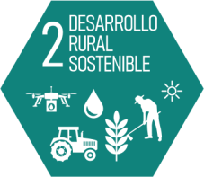
Promote the sustainable and sustainable development of the country's agricultural sector through the implementation of policies and measures that contribute to a low-carbon and resilient economy, including direct actions to improve rural livelihoods for social well-being, promote conservation , protection and improvement in the efficiency of the use of land resources, water, plant and animal genetic capital, the development of new appropriate, adapted and focused technologies with special attention to strengthening the livestock sector and family farming, to contribute to the reduction of food and nutritional insecurity in the country.
Goal 3 Renewable Energy (SAM)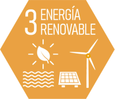
Promote a fair and adequate energy transition towards the sustainable management of renewable, accessible and affordable energies for the Honduran population, which stimulates economic growth, improved productivity, in harmony with the conservation of natural resources, ensuring the implementation of mechanisms , infrastructure, technological models, policies that promote low-carbon measures and actions for the development of the country's energy sector.
Goal 4 Bioenergy (SAM)
Ensure and promote the generation, affordable, safe, modern and sustainable of alternative fuels (biofuels, biofuels, biogas) to the Honduran population, with special attention to rural communities and territories without energy access opportunities, to improve productivity, generation of employment, improvement of the quality of life of the population, efficient use of resources, sustainable environmental management, biotechnological development and development and social inclusion.
Goal 5 Energy efficiency (M)
Guarantee the adequate and efficient use of energy, in order to reduce energy consumption, reduce costs and promote national economic sustainability, improve the family economy and raise awareness and educate the general population towards responsible energy savings, in order to increase efficiency, develop investments at a technological level and maximize benefits through socially viable and economically profitable initiatives.
Goal 6 Electromobility (SAM)
Promote mobility with low emissions through the generation of policies, strategies, regulatory framework, schemes and incentives, programs and projects for the adoption of electric mobility in Honduras; that contribute to the mitigation of greenhouse gases, sustained improvements in public transportation and private transportation, focusing on reducing the consumption of hydrocarbons, and promoting the use of existing renewable resources in the country; accompanied with the adequate and articulated medium and long-term planning of the electrical systems, promoting expansion and distribution lines; integrating the policies and strategies of the energy sector with those of the transport and environment sectors and promoting actions to promote electromobility at the regional level and with multi-stakeholder alliances;
Objective 7 Comprehensive Waste Management (GIR) (M)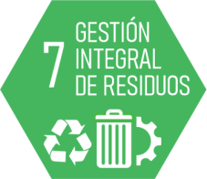
Ensure the promotion and adoption of comprehensive waste management at the national, departmental, municipal and local levels, which allows the promotion of good practices and incentives towards a circular economy adjusted to the national reality, the correct application of legal frameworks, the establishment programs, the implementation of efficient models and actions that make it possible to raise awareness and educate society in general for a just and intergenerational transition towards an environmental sustainability of the territory, under an extended responsibility, in order to avoid risk to human health and the environment .
Goal 8 Smart Cities (A)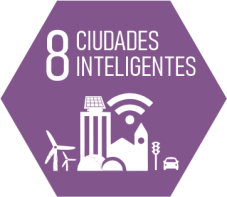
Promote and guarantee the sustainable development of cities and communities, promoting the protection of people, the improvement of the quality of life, through urban development based on environmental, social and economic sustainability, capable of responding adequately to the basic needs of Honduran society, ensuring their livelihoods and more resilient urban environments, allowing the development of efficient and durable infrastructure, with access to quality basic services, social investment, quality education at all levels, job creation , with an adequate and quality health system.
Objective 9 Water Security (A)
Ensure the availability of water resources and the sustainable and comprehensive management of water, to meet the needs of the Honduran population, cover the reliable provision for the production of goods and services, contributing to food security, health and human well-being, development of our ecosystems as well as the adequate maintenance of livelihoods, counting on the tools that allow the use of monitoring systems, projections and forecasts for good water planning, financial support necessary for the implementation of policies that incorporate measures and actions for the integral management of water resources in Honduras.
Goal 10 Sustainable Economy (SAM)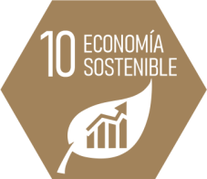
Guide and implement actions, mechanisms and models of low-carbon and resilient development, based on nature to achieve sustainability and economic, social and environmental development, towards a productive and competitive economy, favoring the generation of quality jobs, equality of opportunities, social cohesion, guaranteeing environmental respect through the rational use of natural resources, which allows satisfying the needs of the Honduran population, increasing social well-being, which at the same time promotes responsible consumption and production, through the implementation of a strong, robust, reliable and transparent financial system.
Goal 11 Social Inclusion (SAM)
Guarantee the development of alliances and cooperation and collaboration programs that ensure the participation and inclusion of the Honduran population, to address the effects of climate events and climate variability that our territory and its populations face, with special attention to groups of greater vulnerability such as women, youth, children and indigenous and Afro-Honduran peoples (PIAH), advancing towards gender equality and equity, with opportunities for all, progressing in education, comprehensive health, improving jobs, providing the possibility of having a home dignity and citizen security.
Objective 12 Knowledge Management and Applied Research (SAM)
Promote education, training, awareness, public, private and academic participation, availability, access to information, favoring the development of capacities to generate learning and experience based on applied knowledge of climate change and its effects for the preparation of adequate responses in our country, including the design and implementation of environmental education and awareness programs, the insertion of the knowledge management component and applied research, in all financial management processes for climate change projects that are executed Throughout the national territory.
Objective 13 Monitoring and Evaluation (NDC transparency mechanism) (SAM)
Guarantee an adequate transparent and reliable information, registration, certification and monitoring system, with solid and permanent institutional arrangements, but dynamic, that allow the application and implementation of adaptation and mitigation measures in the country, which is in line with the framework enhanced transparency of Article 13 of the Paris Agreement and the provision of information on support in the form of financing, technology transfer and capacity-building provided to developing country Parties in accordance with the provisions of Articles 9, 10 and 11, which at the same time respect the national framework of social and environmental safeguards, for better access to climate finance, favoring and implementing adequate accountability, for the definition of goals; measurement in time;
Climate change has social, environmental and economic impacts that affect populations in vulnerable situations to a greater extent. In Honduras, children, young people, women, older adults, and indigenous and Afro-Honduran peoples (PIAH), especially those who live in rural settings, are in situations of high vulnerability to climate change. since they have diminished capacities and opportunities to adapt to its effects.
The impacts of climate change vary between men and women due to the roles, responsibilities, inequalities they experience in relation to access to land, credit, information and technology, the use and management of differentiated natural resources and their participation. differentiated in decision-making processes. There is a causal relationship with the impacts of climate change. Where on the one hand the impacts of climate change and environmental degradation tend to exacerbate existing gender inequalities, and on the other hand gender inequalities lead to the negative impacts of these phenomena being greater on women, boys and girls, placing them in a position of vulnerability where their livelihoods, assets and health are affected1.
On the other hand, men and women are important agents of change in relation to different climate sectors. For example, it has been documented that Honduran women and men are actively and continuously involved in different activities that contribute to reducing emissions and increasing resilience. Due to gender roles and inequalities, each group has differentiated contributions, needs and preferences in the various sectors that must be taken into account in strategic documents related to the issue, as well as in commitments acquired by the country.
Honduras has a legal framework to address human rights, intergenerational equity, gender equality and equity, and PIAH rights. Likewise, Honduras is a signatory and has ratified the main declarations and conventions to promote the rights of women and Indigenous Peoples and the gender mandates included in multilateral environmental agreements. The NDC will be aligned and will contribute to achieving the objectives of the Law of Equal Opportunities for Women (2000), the National Policy for Women, the II Plan for Gender Equality and Equity of Honduras 2010-2022 (II PIEGH), the National Youth Policy and the Public Policy Against Racism and Discrimination for the Integral Development of Indigenous and Afro-Honduran Peoples and the Social Protection Policy.
The government of Honduras recognizes the role and leadership of women, PIAH and young people in their diversity as fundamental agents of change in mitigation and adaptation actions. These groups will be involved in decision-making, planning and implementation of actions that allow the development of a low-carbon and resilient society to the effects of climate change. The government is committed to including specific measures to strengthen the social inclusion, leadership and empowerment of women, PIAH and young people as part of the NDC.
The Secretariat for Development and Social Inclusion (SEDIS), the Secretariat for Human Rights (SEDH), the National Institute for Women (INAM), the Directorate for Indigenous and Afro-Honduran Peoples (DINAFROH) and the National Institute for Youth (INJ) They are key institutions to ensure that the implementation of the NDC promotes social inclusion, gender equality, the empowerment of women and intergenerational equity. These institutions will be involved in the governance and institutional arrangements associated with the climate agenda. To ensure gender responsive implementation of the NDC, a working group on gender, PIAH and youth will be established as part of the Inter-Institutional Technical Committee on Climate Change (CTICC). This inter-institutional group will be made up of INAM, DINAFROH, INJ, representatives of the gender units of the institutions linked to the NDC sectors and other institutions relevant to the climate agenda. In addition, the implementation of the NDC will be enriched by experts on human rights, gender, PIAH and young people.
This update of the NDC takes into account the views, perceptions and ideas of women, PIAH and young people. Throughout the construction process, representatives of these social groups participated in various spaces for active listening and consultation. As a result of this process, it was agreed that gender equality, intergenerational equity and the rights of the PIAH are considered transversal axes that must be taken into account when prioritizing and implementing climate measures related to the update and implementation of the NDC. Therefore this NDC:
Honduras recognizes the importance of integrating the social component in the country's mitigation and adaptation efforts. Honduras has proposed to make this integration effective through the inclusion of goals responsive to gender, youth and PIAH in the country's climate actions. As part of its commitment and ambition, Honduras commits through this NDC update to the following social contributions.
| G1 social contribution | ||
| Contribution | SDG | NDC objectives |
| By 2030, Honduras commits to establishing and incorporating a working group on gender, PIAH and youth as part of the Inter-institutional Technical Committee on Climate Change (CTICC). | 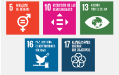 | 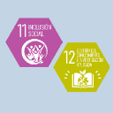 |
| G2 social contribution | ||
| Contribution | SDG | NDC objectives |
| By 2030, Honduras is committed to developing and implementing a strategy for the inclusion of social groups in the implementation of the NDC, which includes the planning and execution of at least two forums to discuss and propose possible public policies, programs and projects that respond to the needs and contexts of women, PIAH and young people. | 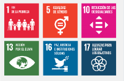 | 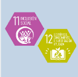 |
| G3 social contribution | ||
| Contribution | SDG | NDC objectives |
| By 2030, Honduras is committed to developing and implementing a protocol that considers investment, financial security and incentives for climate action from the NDC, in order to promote the active inclusion of women, PIAH and young people in solutions. climate mitigation and adaptation. | 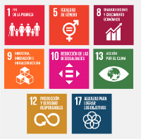 | 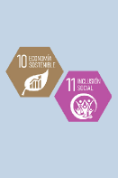 |
| G4 social contribution | ||
| Contribution | SDG | NDC objectives |
| By 2030, Honduras is committed to identifying and integrating gender indicators into the MRV structure of the reinforced transparency framework that make it possible to analyze the differentiated impacts of climate change, vulnerabilities and the different contributions of women, PIAH and young people to reducing emissions and increasing climate adaptation and resilience. | 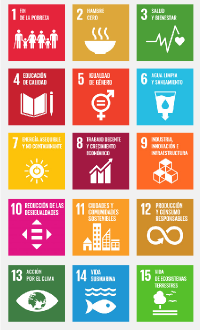 | 
|
| G5 social contribution | ||
| Contribution | SDG | NDC objectives |
| By 2030, Honduras is committed to establishing a registry of disaggregated climate information that collects and analyzes data disaggregated by gender, youth and PIAH, as well as relevant roles in mitigation and adaptation actions. | 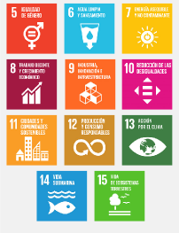 | 
|
| G6 social contribution | ||
| Contribution | SDG | NDC objectives |
| By 2030, Honduras is committed to developing and implementing a gender and climate change strategy to guarantee the responsive gender implementation of the NDC that includes lines of action that promote the access of women, PIAH and young people to new technologies, green jobs and market and financial opportunities. | 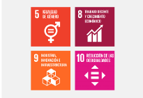 | 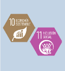 |
Among the measures that are proposed to be carried out for the implementation of the social inclusion and gender equality component, the following stand out:
Honduras is a country in which the forest represents approximately 56% of the national territory2. The country's contribution to global emissions in 2018 was less than 0.05%3. Likewise, in 2018 the country's per capita emissions are 2.34 t CO2-eq / inhabitant / year, much lower than the world average of 6.26 t CO2-eq / inhabitant / year and even than the average for Latin America and the Caribbean which is 4.99 t CO2-eq / inhabitant / year4.
Honduras is a lower-middle-income country, however, it is committed to fighting climate change and updating the NDC. Honduras intends to contribute to global GHG reduction efforts through viable actions that contribute to the mitigation of climate change. The commitment made in this component and the mitigation measures are the means by which the country intends to support the objective of keeping the increase in global average temperature well below 2ºC with respect to pre-industrial levels, and continue efforts to limit this increase in temperature to 1.5ºC with respect to pre-industrial levels, adopted in the Paris Agreement.
Honduras emphasizes the priority that should be assigned to the themes of adaptation, sustainable and social development in the context of the Paris Agreement as fundamental pillars that complement the mitigation objective contained therein. Therefore, Honduras considers the adaptation component as a fundamental part of updating its NDC. Likewise, Honduras has analyzed the links between mitigation-adaptation of the measures considered. However, the contributions do not include the emission reduction effect of the proposed adaptation measures, since they have not been able to be accurately estimated, this being an aspect that will be addressed in the next review.
The ambition established in the updated NDC will be achieved through the efforts of the Republic of Honduras (conditional on international cooperation) and are not part of any regional agreement of joint ambition.
Honduras has carried out a process of updating and improving its estimates of GHG emissions and removals in order to achieve robust results that allow it to adequately support the country's contributions. In this regard, Honduras used all the information available, with the aim of demonstrating a "progression" and reflecting "the greatest possible ambition, taking into account their common but differentiated responsibilities and their respective capacities, in light of different national circumstances."5.
The estimates of the GHG inventory of Honduras (INGEI) carried out for the Third National Communication and for the first biennial update report (IBA, or BUR) have been updated, improving the completeness, consistency and precision of the estimates. .
The INGEI of Honduras covers the period 2000-2015 for all sectors and the following GHGs: Carbon dioxide (CO2), Methane (CH4), Nitrous oxide (N2O) and Hydrofluorocarbons (HFC). The estimates are made using the 2006 IPCC Guidelines and Global Warming Potentials from the IPCC Fifth Assessment Report (AR5)6.
However, the INGEI needs to be completed, given that there are estimation gaps due to lack of basic information that mainly affect the land use, land use change and forestry sector (LULUCF)7. This situation prevents the inclusion of this sector in the 16% reduction of GHG emissions with respect to the “business as usual” (BaU) scenario for 2030. Honduras recognizes this fact and undertakes to improve the completeness and precision of the INGEI in the face of to the next update of the NDC, which will allow to include the LULUCF sector in the BaU diversion commitment.
Based on the above and the estimate of the mitigation effect of the measures, Honduras reaffirms its mitigation commitment with the following contributions:
Honduras reserves the option to make use of cooperative and market-based approaches, including those of Article 6 of the Paris Agreement, which include the use of international transfer mitigation results to comply with its NDC.
| Mitigation contribution M1 | ||
| Contribution | SDG | NDC objectives |
| Honduras commits to a 16% reduction in emissions compared to the “business as usual” (BaU) scenario by 2030 for all sectors excluding LULUCF. | 
|

|
Honduras' ambition in this contribution is based on the analysis of the effects of the main mitigation measures to be developed to achieve the objective of the contribution. These are:
Honduras reserves the right to review mitigation measures in the first biennial transparency report (IBT, or BTR), to be submitted to the UNFCCC in 2024.
Honduras' contribution is based on a reduction in GHG emissions estimated in the BaU scenario in 2030: 28,945 Gg CO2-eq (excluding LULUCF). Therefore, it does not consider a base year.
The BaU scenario has been estimated based on: i) an update of the INGEI of the Third National Communication of Honduras and the first biennial update report; and ii) ad-hoc models and projections for estimating the BaU scenario.
The emissions currently estimated for the BaU scenario will be updated periodically to continue in line with the improvements made in the GHG inventory (good practice according to the 2006 IPCC Guidelines) and the improvements in the information and methods for estimating the projections.
Deadlines and / or periods of application
The implementation period is 2012-2030, with periodic reviews every 5 years. Only one target year (2030) is considered.
Scope and coverage
IPCC sectors included:
|
Gases included:
|
It is proposed that the contribution to the 16% reduction be distributed among the sectors, based on the proportional share of each sector in total national emissions as follows:
For this, Honduras reserves the right to review this distribution based on the updates of the national GHG inventory and the reviews and / or updates of the mitigation measures that will be presented in the first biennial transparency report (IBT, or BTR for its acronym in English).
Within its Country Vision 2010-2038 and the National Plan 2010-2022, Honduras established clear guidelines to face the threats of climate change, highlighting as a priority, the human face of climate change, the reduction of poverty, the generation of of employment and opportunities to reduce migration to other countries. Objective 3 of this vision seeks "a productive Honduras, generator of opportunities and decent employment, which makes sustainable use of its resources and reduces environmental vulnerability" (Country Vision). Under this strategic objective, the country has set as goals the reduction of the unemployment rate, the increase of renewable energy sources, the stability of food security, the management of water resources and the sustainable management of productive forest lands.
Honduras established a roadmap for compliance with its first NDC10. Its first objective was to develop the NDC update process in 2020, whose term was limited by the effects of the COVID-19 pandemic and climatic events that the country suffered, so its delivery is carried out in 2021. With for this purpose, under the regulations for the creation of the CICC and CTICC, the “Subcommittee of the NDC of Honduras” was created, made up of the different public institutions involved in the execution of public policies against climate change.
The update of the NDC has been developed from November 2017 to May 2021. The update process was planned with the main institutional actors in order to gather information from the largest number of actors, inputs generated by ongoing initiatives based on an analysis from the updates of the NDCs of prominent countries from which ideas and lessons learned have been obtained.
An extensive internal base report has been developed to consolidate the technical support information for each sector with its trend analysis of GHG emissions, mitigation potential, development of measures through a technical sheet, as well as chapters on adaptation. , gender and financing, which has been prepared by a team of experts through a process of consultation and information with the stakeholders involved, which ensures informed decision-making and also serves as the basis for the next NDC in Honduras.
Honduras has developed the update of the NDC through a participatory and consultative process that has involved institutional, private and civil society actors. To this end, various thematic socialization and validation workshops have been developed, such as one on adaptation and the other on mitigation. Likewise, two active listening sessions were developed with women, youth and PIAH to gather information on their needs, their contributions and their role in advocacy actions on Climate Change for the generation of the commitments that the country must acquire to achieve social development. inclusive; and 4 workshops at the national level, under the NDC-LULUCF project, where the 12 ICF forestry regions were grouped together.
The updated NDC of Honduras is the result of a collaborative process between institutions and implementing agencies, allowing an improvement in mitigation estimates, as well as the incorporation of clear adaptation commitments and groups of greater vulnerability. Engagement with local communities, indigenous peoples, youth and women is detailed in the section “NDC Social Inclusion Component”.
In updating the commitment “deviated from the BaU scenario”, Honduras improved the baseline information and GHG estimates by:
(i) Inclusion of emissions due to lime and HFC production for 2000-2009;
(ii) Updating of the basic information of the cattle herd regarding the use of fertilizers and rice cultivation;
(iii) Inclusion of emissions due to cattle, goat, horse, mule and donkey livestock activities;
(iv) Methodological and data improvement in emissions due to solid waste disposal; Y
(v) Updating of the base information on burned waste and MCF of emissions from wastewater treatment in the industry.
The updated INGEI of Honduras covers the period 2000-2015 for all sectors (except LULUCF) and the following GHGs: Carbon dioxide (CO2), Methane (CH4), Nitrous oxide (N2O), Hydrofluorocarbons (HFC). The estimates are made using the 2006 IPCC Guidelines and Global Warming Potentials from the IPCC Fifth Assessment Report (AR5)11.
The mitigation measures adopted and considered viable by the country have been identified through a participatory process with the main key actors in the country:
Energy Sector: it has been estimated, using the LEAP12 model as a basis , a BaU scenario and mitigation scenarios that include measures related to:
Table 1 - Mitigation scenarios for the Energy sector
| Mitigation measures | Mitigation Scenario 1 | Mitigation Scenario 2 | Mitigation Scenario 3 |
|---|---|---|---|
| Renewable energy | Moderate integration of renewable energies in the national electricity grid and industrial air conditioning processes | High integration of renewable energies in the national electricity grid and industrial heating processes | Accelerated integration of renewable energies in the national electricity grid and industrial heating processes |
| Energy efficiency | Moderate penetration of efficient clean cooking options | High penetration of efficient clean cooking options | Accelerated penetration of efficient clean cooking options |
| Electromobility | Moderate adoption of electric and hybrid vehicles and small change to public transport | High adoption of electric and hybrid vehicles and small change to public transport | Accelerated adoption of electric and hybrid vehicles and small change to public transport |
| Biofuel | Moderate implementation of blending policies for the use of ethanol and biodiesel / biogas in industry | High implementation of mixing policies for the use of ethanol and biodiesel / biogas in industry | Accelerated implementation of blending policies for the use of ethanol and biodiesel / biogas in industry |
Source: CAEP (2021)
Figure 1 - GHG emissions in the BaU and mitigation scenarios for the Energy sector
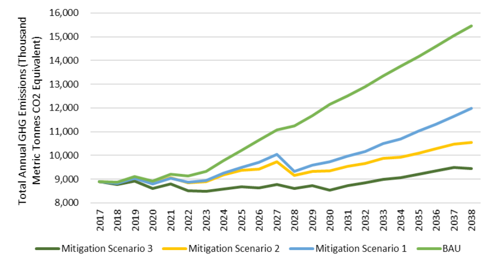
Year
Source: CAEP (2021)
Table 2 - Mitigation scenarios for the Energy sector
| Stage | Emissions 2030 (Thousands of metric tons of CO2-e) |
Emission reduction calculated in 2030 compared to BAU (%) |
|---|---|---|
| BAU | 12,142 | - |
| Mitigation Scenario 1 | 9,734 | 20% |
| Mitigation Scenario 2 | 9,355 | 23% |
| Mitigation Scenario 3 | 8,545 | 30% |
Source: CAEP (2021)
For the update of the NDC, the country has chosen mitigation scenario 1, where the energy sector can contribute with sectoral emission reductions of 20% compared to the BAU scenario. Honduras reserves the right to review the BAU and mitigation scenarios for the Energy sector in the first biennial transparency report (IBT, or BTR).
Honduras considers its updated NDC to be fair and ambitious, which in turn improves its scope by detailing climate commitments through specific adaptation and mitigation measures and incorporating gender equality, youth and PIAH mainstreaming. Likewise, it sets out its planning intentions in terms of financing, and lays down a consolidated basis for the reduction of emissions, contributing to the global mitigation effort despite its aforementioned national circumstances.
Honduras, in its update of the NDC, reaffirms the government's commitment to respect, promote and take into consideration their respective obligations with respect to human rights, gender equality and intergenerational equity, committing to ensure a cross-cutting perspective and guarantee That women, youth, indigenous and Afro-Honduran peoples have full and effective participation in decision-making when implementing climate actions, given the great importance of these different groups of people in the national context as they are highly vulnerable to the impacts of climate change. climate change. This commitment is reflected in the social inclusion component of this NDC.
Similarly, this update represents a progression for the country with respect to the previous one, by increasing by 1% in the reduction of GHG emissions, likewise, the scope of the ambition is significantly improved, including measures and actions in synergy with adaptation. with social inclusion.
Additionally, the goal is to work on a long-term strategy that brings the country closer to complying with the commitment established in Article 4, paragraph 19 of the Paris Agreement.
Honduras contributes to limiting global temperature growth through its ambition to reduce expected emissions by 2030.
Synergistic contribution S1< |
||
| Contribution | SDG | NDC objectives |
| By 2030, Honduras is committed to promoting the implementation of the “functional conservation and restoration of the rural landscape”, reaching 1.3 million hectares of forest in the process of restoration. | 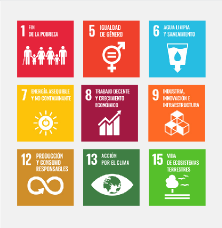 | 
|
As part of the nature-based solution measures, Honduras has proposed to implement restoration activities in 300,000 hectares in addition to the million hectares of reforestation committed in the framework of the Bonn Challenge and reflected in the first NDC; adopting sustainable agroforestry practices that, in addition to mitigation, contribute to the improvement of resilience, contributing to the generation of employment, food security and the reactivation of key productive sectors, such as coffee, among others. The foregoing is conditioned to the financing flows from the resources committed by the developed countries according to the Paris Agreement.
Honduras proposes an increase in the ambition of the conservation and functional restoration of rural landscape considering that the country will have financial, technological and training support to:
Honduras's contribution does not consider a comparative reference point, but rather a time horizon (2020-2030) and a goal year (2030). Therefore, there is no goal relative to the starting or reference year.
Honduras has been implementing various policies and measures in the LULUCF sector that contribute to the “functional conservation and restoration of the rural landscape”, among them the National Forestry, Protected Areas and Wildlife Program 2010-2030 - PRONAFOR (2010)15; the National Reforestation Program - PNR (2010)16; the National Program for the Recovery of Degraded Ecosystems Goods and Services of Honduras - PNRBSED (2018)17; the National Program for the Conservation of Terrestrial Ecosystems - PNCET (2020); and the National REDD + Strategy - ENREDD + (2019), also has the Program for the Restoration of Climate-Resilient Forests and Forestry for the Sustainability of Water-Related Ecosystem Services18. As a result of the PNR, the country has managed to intervene in the 2015-2018 period to restore 120,808 hectares. Honduras reserves the right to revise the value, based on updated information, which may be available at the time of sending the first biennial transparency report (IBT, or BTR in its acronym in English).
The implementation period is 2012-2030, with a review every 5 years. Only one target year (2030) is considered.
The goal of Honduras is to promote activities aimed at the conservation and functional restoration of the rural landscape of 1.3 million hectares of forest. Although the goal is not expressed in GHG reduction / absorption, the functional restoration of the rural landscape will contribute to the increase of carbon sequestration in the LULUCF sector, particularly in the INGEI categories “Pastures converted into forest lands” (3B1bii) and “Other land converted to forest land” (3B1bv).
In addition, the functional restoration of the rural landscape presents adaptation co-benefits related to the 5 strategic axes of the National Adaptation Plan (PNA):
In addition to the planning process described in the contribution “deviated from the BaU scenario”; The updating of the commitment “conservation and restoration of the rural landscape” was supported by inputs generated by ongoing initiatives (ie UNEP's NDC-LULUCF Project19 ) and the National REDD + Strategy (ENREDD). In ENREDD, strategic option 4 (“Restoration of Degraded Ecosystems and Agroforestry Practices”) aims to “establish actions for the recovery of goods and services of degraded ecosystems on the ground at the local level, with institutional, technical and economic support at the national level, with emphasis on the promotion and development of an environmentally and economically sustainable agroforestry sector compatible with the conservation and good management of natural resources ”.
The restoration goal was defined as a product of the technical and economic potential of the different policies and measures being implemented or planned in the country, in particular the National Forestry, Protected Areas and Wildlife Program 2010-2030 - PRONAFOR (2010); the National Reforestation Program - PNR (2010); the National Program for the Recovery of Degraded Ecosystems Goods and Services of Honduras - PNRBSED (2018); and the National Program for the Conservation of Terrestrial Ecosystems - PNCET (2020)
Honduras through PNRBSED identified a total 6,795,908 ha as restoration areas (60.4% of the national territory), subsequently defined areas that ensure improvements in 3 or more of the essential criteria, environmental conditions, participation of women, economic incentives and protection of the forest, variables from the multicriteria analysis. In this sense, a map of priority areas for restoration was generated. Based on this map, 2,287,512 ha (20.3% of the national territory) were identified, which are considered priorities for functional restoration, which are preliminarily divided into protected areas, declared micro-basins and management plans. Areas to restore will be reported in biennial transparency reports (IBTs, or BTRs). Likewise, with the PNCET,
The indicator to monitor the progress made in the application and compliance with the "conservation and functional restoration of the rural landscape" is the number of hectares recovered, using the "Information System for Forest Management and Monitoring - SIGMOF"20 of the National Institute of Forest Conservation and Development, Protected Areas and Wildlife of Honduras (ICF). Honduras reserves the right to review or confirm the indicator in the first BTR.
Figure 2 - Report of restoration activities
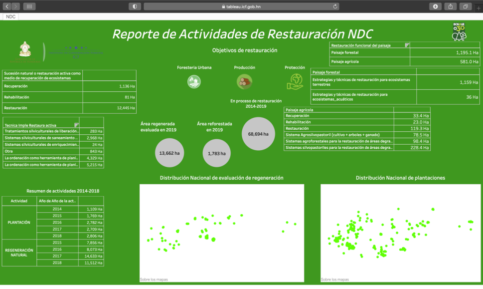
Source: SIGMOF (2020)
The concept of "functional restoration of the rural landscape" includes processes for the "restoration of forest landscapes" and the "restoration of agricultural or livestock land" through agroforestry systems (SAF), active restoration activities as a means of recovery. ("Recovery", "rehabilitation" and "restoration"), natural succession or passive restoration as a means of recovering ecosystems and succession, applying concepts of:
The forests are:
“... a natural or planted association of trees (at any stage of the natural life cycle) which may or may not be accompanied by shrubs or other strata, which covers a minimum area of 1 hectare and which is capable of producing wood, other forest products, ecosystem goods and services for the benefit of the population and that influence the water regime, soil, climate and provide habitat for wildlife. The canopy coverage of said association must be greater than 10% and the trees must reach a minimum height of two meters for mangroves and four meters for the rest of the ecosystems. Likewise, forests are considered to be areas that temporarily lack forest population as a result of human intervention or natural causes, but with potential conditions,
Figure 3 - Concept map of "conservation and functional restoration of rural landscape"

Source: SIGMOF, 2019
In addition to the considerations described in the contribution “deviated from the BaU scenario”; Honduras is an eminently forested country, in which the forest represents approximately 56% of the national territory (ICF, 2018). In this sense, the inclusion in the NDC of the commitment to "conservation and functional restoration of the rural landscape" is justified.
Honduras understands that the "conservation and functional restoration of rural landscape" contributes to mitigation and adaptation to climate change, in order to "allow ecosystems to adapt naturally to climate change, ensure that food production is not threatened and allow that economic development continues in a sustainable manner ”, as presented in article 2.
| Synergistic contribution S2 | ||
| Contribution | SDG | NDC objectives |
| By 2030, Honduras is committed to reducing family firewood consumption by 39%, helping in the fight against deforestation | 
|
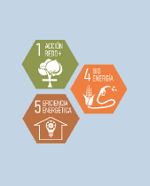 |
The base year for the reduction of firewood consumption in families is the year 2012 (ie, the first year of the NDC application period). In the 2019 National Energy Balance (BEN)22, the consumption of families (residential sector) in 2012 was 13,936 KBEP (thousands of barrels of oil equivalent). Honduras reserves the right to revise the value, based on new information that may be available prior to the sending of the first biennial transparency report (IBT, or BTR in its acronym in English).
The implementation period is 2012-2030, with a review every 5 years. Only one target year (2030) is considered.
Although the 39% reduction goal for the consumption of firewood in families is not expressed in GHG reduction, it contributes to the reduction of CH4 and N2O emissions in the Energy sector, particularly in the “Residential” category (1A4b ). In addition, it will also contribute to the reduction of CO2 emissions in the LULUCF sector, in particular in the INGEI categories "Forest lands that remain as such" (3B1a) and "Forest lands converted into other lands" (3B6bi).
In addition, the reduction in firewood consumption presents adaptation co-benefits related to the 5 strategic axes of the National Adaptation Plan (PNA):
In addition to the planning process described in the contribution “deviated from the BaU scenario”; In the specific framework for firewood consumption, the country has the Honduras Energy Prospective (2017-2038)23, the NAMA Improved Stoves and the National Strategy for the Adoption of Improved Stoves (ENAEM)24, which is still under development. The purpose of ENAEM is to identify the lines that lead to the transition and the sustained use of clean cooking technologies by the Honduran population. The direct benefits of adopting improved stoves can be quantified in terms of: i) reduction of firewood consumption in households, associated in turn with less pressure on forest resources, ii) improvement in indoor air quality , reducing the risk of respiratory diseases, iii) the optimization of resources at home, allowing the investment of time and money, previously used for access to energy, in activities that generate value and contribute to the reduction of poverty. Equally,
The indicator to monitor the progress made in the application and fulfillment of the sector objective of "reduction of firewood consumption in families" will be the consumption of firewood in tons and for its monitoring the information from the National Energy Balance (BEN ). Honduras reserves the right to review or confirm the indicator in the first BTR.
To estimate firewood consumption, Honduras has used, since 2017, a methodology developed by the SEN, which considers average per capita consumption, per capita consumption and number of inhabitants, both according to household size, fraction of urban households that use firewood, fraction of rural households that use firewood, fraction of urban households that use improved stove for cooking, fraction of urban households that use traditional stove for cooking, fraction of rural households that use traditional stove for cooking, and fraction of wood savings with improved stove25.
Considerations of justice and ambition in the light of their national circumstances
In addition to the considerations described in the contribution “deviated from the BaU scenario”; According to BEN 2019, it is estimated that the total firewood consumption in the country reached approximately 11,000 KBEP, which represents 38% of the final energy consumption in the country and 85% of the energy consumption of the residential sector. In this sense, the inclusion in the NDC of the commitment to reduce the consumption of firewood by 39% in families is justified, helping in the fight against deforestation.
Figure 4 - Firewood consumption in Honduras

Source: BEN, 2019
Honduras understands that the “reduction of firewood consumption” contributes to the mitigation and adaptation to climate change, due to the innumerable benefits generated by the reduction of GHG emissions. Likewise, reducing deforestation also contributes to “allowing ecosystems to adapt naturally to climate change, ensuring that food production is not threatened, and allowing economic development to continue in a sustainable manner”. Collaterally, it also contributes to the household economy by reducing the cost of acquiring firewood for family consumption.
When Honduras submitted its NDC under the Paris Agreement, on September 20, 2016, there was not complete and adequate information to estimate greenhouse gas (GHG) emissions and removals in all categories of land use, According to the methodological guidelines of the Intergovernmental Panel on Climate Change (IPCC):
Due to the information gap, the country could not include the LULUCF sector in the BAU diversion commitment. Therefore, the option was to present sectoral objectives related to "afforestation / reforestation" and "firewood consumption in families".
With the preparation of the national inventory of GHG emissions and removals, presented in 2020 as a component of the Third National Communication (TCN) and the first biennial update report (IBA)26, the country was able to estimate the emissions and removals of the following GHG and land use categories:
In addition, the country managed to present in 2020, under the Warsaw Framework for REDD +, a new proposal for a Forest Reference Level (FRL)27. Despite having included the 5 REDD + activities in the 2020 NREF; Honduras only managed to estimate emissions / removals for deforestation; degradation and increase of carbon stocks in forests.
Currently, the country is completing the third cycle of the national forest inventory (INF) and will have updated values for the emission factors of the different types of forests: Wet broadleaf; Conifer; Deciduous Mangrove and Broadleaf.
Still, the country does not have the conditions to develop a land use conversion matrix to identify and quantify all transitions between the different land use categories and, consequently, estimate all GHG emissions / removals from the LULUCF sector. This situation does not allow including this sector in the reduction of emissions with respect to the BaU scenario for 2030. However, Honduras continues its commitment to 2 sectoral objectives that seek to contribute directly to the mitigation of GHG emissions and adaptation in this sector.
Honduras will contribute to the global adaptation goal through work in the sectors of greatest urgency in adaptation climate action defined by the country, strengthening resilience and increasing capacities in the management of water resources, biodiversity and ecosystem services, agri-food sovereignty, infrastructure development, disaster risk reduction management from a gender perspective and in other cross-cutting areas (energy security, health, education, etc.). Honduras has prioritized the promotion of adaptation measures and actions based on ecosystem and community approaches, promoting the promotion of nature-based solutions to face the challenges of climate change.
The Intergovernmental Panel on Climate Change (IPCC) confirmed in its Fifth Report (AR5) that human influence on the climate system is unequivocal and increasing, and that its impacts are observed on all continents and oceans. . In this regard, Honduras suffers from the onslaught of atmospheric events that impact the country's economy by destroying its productive infrastructure. For example, the destruction caused by the passage of Hurricane Mitch (category five) in 1999 or the two hurricanes Eta and Iota (November 2020) that again destroy the infrastructure that had been rebuilding in the previous two decades.
The IPCC confirmed in its Fifth Report that a warming of 0.7 to 1 ° C has been observed in the Latin American region since the 1970s according to the AR5. Likewise, there is an increase in extreme temperatures in Central America and a trend towards a decrease in rainfall. Changes in climate variability and extreme events have seriously affected the region. Likewise, the intensity and number of extreme and gradual events in the region (eg Niño / Niña events and hurricanes) has been increasing. This has led to Honduras being classified as a very vulnerable country to the effects of climate change by a large number of indices and whose greatest impact is received by women and children.
The Paris Agreement includes within its components the issue of adaptation. In particular, its article 2 proposes to increase the capacity to adapt to the adverse effects of climate change and to promote climate resilience and development with low greenhouse gas (GHG) emissions. Likewise, in its article 7 it recognizes that the current need for adaptation is considerable and that an adaptation goal must be established.
In this context, Honduras recognizes the relevance of adaptation processes to strengthen the country's resilience to the impacts of climate change, making consistent progress in the planning and implementation of adaptation actions in the different climate change policies and instruments. Likewise, Honduras recognizes the need to present transparent information on adaptation in line with Article 7 of the Country Agreement, for which it undertakes to present its first Adaptation Communication.
| Contribution in adaptation A1 | ||
| Contribution | SDG | NDC objectives |
| This year 2021, Honduras will present its first Adaptation Communication that has been developed within the works of updating this NDC and is the knowledge base for this section. | 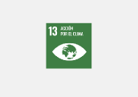 | 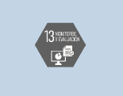 |
The guiding document for adaptation in Honduras is the National Adaptation Plan (PNA), approved in 2018, which establishes the strategic guidelines and transversal pillars for its approach at the national level. This document is part of national planning in line with the National Plan and Country Vision28, which establishes the country's long-term planning vision.
The PNA establishes five priority sectors for adaptation in the country: 1. Agri-food and Food Sovereignty, 2. Human Health, 3. Infrastructure and Socio-economic Development, 4. Biodiversity and Ecosystem Services, and; 5. Water Resources.
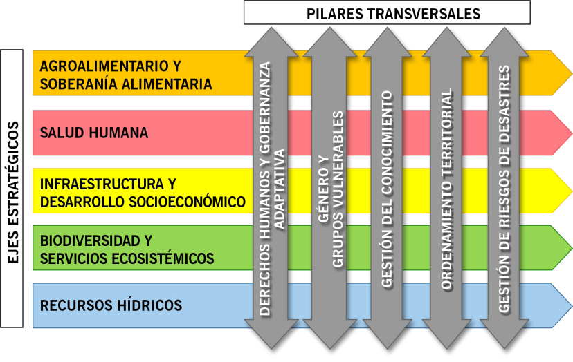
Of the 5 sectors, the first two have a Sectorial Adaptation Strategy, while the rest are in the process of managing funds to develop their own sector strategy. Additionally, at the territorial level there are five (5) Regional Development Plans with the adaptation component and seven (7) municipal climate change plans29. In addition, the adaptation component is currently being incorporated into the preparation and updating of management plans for all protected areas in the country.
In addition to the NAP, Honduras has a Technological Action Plan (PAT), which defines a series of technologies for adaptation at the national level and prioritizes three technologies for the Agrifood Sector and three technologies for the Water Resources Sector.
| Contribution in adaptation A2 | ||
| Contribution | SDG | NDC objectives |
| In 2022, Honduras will have completed the process of preparing the National Adaptation Program (NAPA), in order to operationalize the NAP, in line with the measures identified in this NDC. | 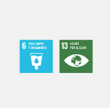 | 
|
It is planned to develop this contribution through the implementation of the Honduras Adaptation Technology Action Plan (ENT-Honduras).
For the NDC, taking into account this programmatic structure, 5 sectors of greatest urgency have been defined in climate action for adaptation in the country. Below are the adaptation measures prioritized by the National Adaptation Committee for each of the priority sectors:
| Contribution in adaptation A3 | ||
| Contribution | SDG | NDC objectives |
| In 2023, the National Water Policy will have been drawn up and the Water Authority created, in addition to the strengthening of the National Meteorological Network among all the institutions that generate hydroclimatic information. | 
|

|
It is planned to develop this contribution through the following measures:
| Contribution in adaptation A4 | ||
| Contribution | SDG | NDC objectives |
| In 2030, the protected areas management plans will have been updated with the adaptation component | 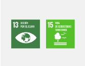 | 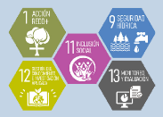 |
It is planned to develop this contribution through the following measures:
Likewise, the activities of this sector will support the commitment to conservation and functional restoration of 1.3 million hectares of functional forest landscapes in 2030, which is included in the section “Functional conservation and restoration of rural landscapes”.
| Contribution in adaptation A5 | ||
| Contribution | SDG | NDC objectives |
| In 2025, the country's Participatory Agrifood Tables will have been formed and strengthened, in adaptation measures, with their early warning systems working. | 
|
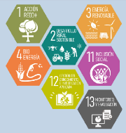 |
It is planned to develop this contribution through the following measures:
| Contribution in adaptation A6 | ||
| Contribution | SDG | NDC objectives |
| In 2023, the Infrastructure Sector Adaptation Strategy will have been drawn up and the adaptation component will have been incorporated into the designs of new road structures. | 
|

|
| Contribution in adaptation A7 | ||
| Contribution | SDG | NDC objectives |
| In 2025, Municipal Plans for Territorial Organization-PMOT and / or Municipal Development Plans-PDM will have been updated with a focus on adaptation and a gender perspective. | 
|

|
It is planned to develop these contributions through the following measures:
| Contribution in adaptation A8 | ||
| Contribution | SDG | NDC objectives |
| In 2023, an adaptation strategy will have been implemented for the electricity transmission and distribution system and an MRV system for adaptation in the country will be established. | 
|
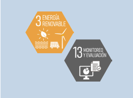 |
| Contribution in adaptation A9 | ||
| Contribution | SDG | NDC objectives |
| In 2025, there will be financing mechanisms for adaptation actions for vulnerable groups (women, youth and PIAH). | 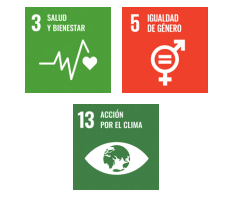 | 
|
It is planned to develop these contributions through the following measures:
Access to climate finance is a challenge for the country, and it is considered that in order to achieve the objectives of this NDC, policies are required that allow the resources of the financial mechanisms to flow more quickly. Although it is true, the country has been managing resources that have allowed important results, such as, for example, since the initial NDC, a change has been generated in the energy matrix.
It is important to highlight that a first operation has been had with the Green Climate Fund in highly concessional terms, directly linked to the commitment to restore one million hectares of forest, and resources are managed for the implementation of the key NAMAS that have been mentioned, among these those of the coffee and livestock sectors.
The Republic of Honduras has adopted institutional arrangements to mobilize and monitor climate finance. These arrangements determine the hierarchy and coordination relationships between the different instances of the national and subnational governments of Honduras, and assign specific functions and responsibilities for the implementation of the Climate Change Policy, among these entities there are:
a) Under the Climate Change Law, the following decision-making bodies have been created;
The CICC defines and promotes the national climate change policy framework and ensures that public policies adequately incorporate considerations in this area. It also approves the mechanism to identify and approve initiatives, investments and research activities. Likewise, it prioritizes the execution of projects or programs that contribute to tackling climate change. The functions of the CICC are defined in the Climate Change Law, Executive Decree no. 297 of 2013 and in Agreement no. 1203 of 2013.
The committee promotes and coordinates actions related to climate change research, strategies, programs and initiatives, also manages resources for the implementation of policies and prepares and promotes regional programs in this area. Decree PCM 022 of 2010 and Executive Agreement no. 1203 of 2013 define the functions of the CTICC.
The CTICC has the power to create subcommittees to address specific issues such as the following; (i) air quality subcommittee, (ii) water resources subcommittee, (iii) REDD + subcommittee, (iv) agriculture and food security subcommittee, and (v) intersectoral technical subcommittee for the NDC. This last Subcommittee technically discusses updates or changes in the NDC, as well as the analysis and alternatives for its implementation.
The DNCC is a dependency of the Ministry of Natural Resources and Environment (MiAmbiente +), and is the technical body that supports the previous committees, is in charge of identifying measures for adaptation and mitigation of climate change and supporting the management of resources for their implementation. In this role, the DNCC collaborates with the different sectors to identify and manage international technical cooperation resources with international sources of climate finance. The functions of the DNCC are defined in Decree PCM 022 of 2019 and elaborated in its internal regulations.
b) The Presidency of the Republic established an additional institutional framework, such as:
Which is the body in charge of leading, coordinating and approving the strategies and public policies necessary to prevent and respond to the impacts of climate change, as well as enforcing the appropriate legal and institutional framework for such purposes. The National Climate Change Strategy and the complementary policies that are necessary to achieve its objectives. It orders the management and alignment of resources for the financing of climate actions, following the provisions emanating from SEFIN. The functions of the Clima + Board of Directors are established in Decree PCM 035 of 2017 and has for its execution the Presidential Office of Climate Change (Clima +)
Its technical functions are related to the monitoring of climate change actions. It facilitates inter-institutional coordination and advises the different instances of the public administration in their management of climate change. Likewise, the office guides the application of international technical cooperation resources to ensure their compatibility with the objectives and priorities of Honduras' climate change policy. The functions of the Presidential Climate + Office are also established in Decree PCM 035 of 2017.
It is created with the objective of formulating and implementing the green growth policy for all, which will order, regulate and promote the protection and restoration of ecosystems and the development of a low-carbon economy through the programs: national asset recovery program and degraded ecosystem services - PNRBSED; national program for the conservation of terrestrial ecosystems - PNCET; national program of sustainable consumption and production - PNCPS and national program of blue economy - PNEA. OPEV guides the implementation of financial resources and international technical cooperation, to ensure the green economy policy towards all relevant sectors of society under an economy low in emissions and less vulnerable to climate change in Honduras.
c) Other Institutions related to Own Mandate, are the following:
SEFIN is the governing body of the Public Sector Financial Administration System and is in charge of ensuring the transparency of information on financial management. The secretariat determines the norms and guidelines for the formulation of public investment programs and projects. SEFIN is responsible for the management of internal and external reimbursable resources, including the authorization of external credit operations and technical cooperation that require counterpart resources.
The general provisions of the public budget of Honduras require public institutions to identify and report investments and expenditures related to mitigation and adaptation to climate change, and to the reduction of risks from natural disasters. SEFIN compiles and reports annually the information on public investments in these items. SEFIN's functions are established in the Organic Budget Law PCM-048 of 2011.
The SRECI is in charge of managing international cooperation resources, its functions are contained in Decree PCM-008 of 1997.
This unit evaluates and approves projects, ensuring that they are aligned with the country's development priorities. Decree PCM-009 of 2018 establishes the functions of SCGG.
These last three institutions (SEFIN, SRECI and SCGG) form the Non-reimbursable External Cooperation Committee (CCENR), which coordinates the management of non-reimbursable international technical cooperation resources and verifies the correct alignment of these resources with national development priorities. The CCENR authorizes the participation of government entities in the management of non-reimbursable international technical cooperation and authorizes the contributions of national counterpart resources. Decree PCM 09 of 2018 establishes the creation of the CCENR and defines its functions.
As indicated, there is a considerable number of institutions that are linked to the climate finance management and approval process. Therefore, the NDC proposes to review the governance that involves their participation and to propose a mechanism that streamlines decision-making by defining specific roles for each State institution.
The Republic of Honduras is committed to the mobilization of national and international financial resources that allow the fulfillment of the contributions in matters of mitigation and adaptation to climate change indicated in the NDC, supported by the institutional arrangements for the management of climate finance. To strengthen it, Honduras will prepare and adopt an Investment Plan and a Climate Change Financing Strategy, these instruments will facilitate the determination of financial resource needs for the implementation of the NDC and will contribute to the identification and mobilization of national and international resources for the financing of the measures defined in the NDC.
Under the provisions of Decision 18 / CMA.1 on the guiding principles of Modalities, Procedures and Guidelines (MPG), Honduras undertakes to compile the information on the support needed and received, based on the common tabulars agreed upon, in consistent with the limitations established within the Enhanced Transparency Framework.
To strengthen the planning, management and mobilization of financial resources for its NDC, Honduras proposes the following contributions:
| Contribution in financing F1 | ||
| Contribution | SDG | NDC objectives |
| By 2030, Honduras is committed to adopting an Investment Plan with a Climate Change Financing Strategy and a carbon market architecture. | 
|

|
To this end, the investment plan and the climate change financing strategy will develop lines of action aimed at:
| Contribution in financing F2 | ||
| Contribution | SDG | NDC objectives |
| By 2030, Honduras is committed to improving the governance of the financial management of climate change, through the use of the Investment Plan and the Financing Strategy, as a unifying instrument for decision-making. | 
|

|
For the fulfillment of this contribution, it will be ensured that, during the construction of the Investment Plan and Financial Strategy, indicated in contribution 1, institutional governance mechanisms are addressed and proposed that define the institutional roles and facilitate the management of climate finance.
| Contribution in financing F3 | ||
| Contribution | SDG | NDC objectives |
| Honduras commits to continue identifying and reporting investments and expenses related to mitigating and adapting to climate change, and reducing the risks of natural disasters, in the annual budget exercises. | 
|

|
| Contribution in financing F4 | ||
| Contribution | SDG | NDC objectives |
| By 2030, Honduras is committed to developing a system for monitoring the support received, in accordance with the provisions of the reinforced transparency framework, the guiding principles of Modalities, Procedures and Guidelines (MPG). | 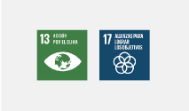 | 
|
In support of the fulfillment of these contributions, the creation of an Inter-institutional Subcommittee on Climate Financing will be promoted, under the structure of the Inter-institutional Technical Committee on Climate Change (CTICC).
Honduras plans to transition from the current MRV system (ie the biennial update reports) to the reinforced transparency framework (Article 13) of the Paris Agreement, using the accumulated experience in the preparation of its National Communications30 and the First Biennial Report. Update (IBA or BUR)31. The design and implementation of the MRV will be based on the Objectives of the NDC considering a registration and certification mechanism. Below is a brief description of the main MRV systems that the country has and / or plans to implement.
To comply with the MRV requirements under the United Nations Framework Convention on Climate Change (UNFCCC) and the Paris Agreement and its reinforced transparency framework (Article 13), Honduras will establish a “National System of Measurement, Reporting and Verification for Transparency (SN-MRVT) ”whose main objective is the adequate management and collection of all the information necessary for the preparation of biennial transparency reports (IBT or BTR, in its acronym in English) and its National Communications32.
The modules of the SN-MRVT will be:
The International Compliance, Control and Monitoring Unit (UCICS), of the National Directorate of Climate Change (DNCC) of the Secretariat of Natural Resources and Environment (MiAmbiente +) would have the coordination of the SN-MRVT, working in conjunction with government institutions related, for the compilation and treatment of the specific information required in each module. All the information generated will be technically validated by the Inter-institutional Technical Committee on Climate Change (CTICC).
Figure 5 - Structure of the "National System of Measurement, Reporting and Verification for Transparency (SN-MRVT)"

The details of the SN-MRVT will be presented in the first IBT, to be sent no later than December 31, 2024.
For the activity data and commitments of the Land Use, Land Use Change and Forestry (LULUCF) sector and the commitment to "functional restoration of rural landscape", Honduras will use the SIGMOF that is implemented by the National Conservation Institute and Forest Development, Protected Areas and Wildlife of Honduras (ICF).
The SIGMOF is an official, precise, transparent, operational, and efficient information management platform for the forestry sector. The objective of the platform is to centralize, analyze, document and publish processes in a precise and dynamic way through various subsystems: Municipal Forest Atlas and Land Cover; Geo-portal of the Forestry Sector of Honduras; SNIF (National Forest Information System); SIMONI (Comprehensive Monitoring System); SIRMA (Computer System for Traceability of Wood from Harvesting and Legal Sources) and Terra-i Honduras (tool designed to visualize detections of changes in coverage and land use)33.
The National Framework of Safeguards for Climate Change Initiatives (MNSCC) seeks to bring together the different sectoral policies and approaches that develop or are related to the country's environmental and social safeguards, for their prior application to any public and private initiative on climate change that is seek to implement in the national territory.
The MNSCC assesses the potential benefits and risks of implementing programs or projects in the climate change sector, with special analysis in the subsectors of:
The MNSCC is expected to have progressive adjustments as experience is gained in its application. As an initial step, Honduras has identified the following nine (9) Social and Environmental Safeguards (SSAs) to compose the MNSCC of Honduras:
Honduras is developing a series of tools with the purpose of complementing and supporting the implementation of the MNSCC. These tools are:
Complementing the MNSCC and to comply with the requirements regarding safeguards for REDD +34 activities, Honduras is also developing the Safeguards Information System (SIS), as a platform to monitor, report and guarantee compliance with how The seven (7) safeguards established in the UNFCCC are being addressed and respected, through its own structure that will be housed in the International Compliance, Control and Monitoring Unit (UCICS) of the DNCC / MiAmbiente + and that will be fed with contributions from other platforms that generate information relevant to REDD + actions.
To achieve optimal operation of the SIS, four (4) elements have been identified, which are described below:
Progress, contributions received and support required from SN-MRVT, SIGMOF, MNSCC and SIS-REDD will be reported in biennial transparency reports (IBT).
In accordance with paragraphs 14 and 15 of Article 13 of the Paris Agreement, “support will be provided to developing countries for the implementation of the enhanced transparency framework” and “continued support will also be provided to increase the transparency capacity of the Parties. which are developing countries ”.
In this sense, Honduras hopes to receive support to:
1. Creation of the appropriate legal instruments for the correct identification and distribution of responsibility among the different institutions involved in the SN-MRVT, SIGMOF, MNSCC and SIS-REDD;
2. Review and implementation of the “manuals and protocols to guarantee the exchange of information” between the institutions involved in the SN-MRVT, SIGMOF, MNSCC and SIS-REDD; Y
3. Periodic review and update of the SN-MRVT, SIGMOF, MNSCC and SIS-REDD to incorporate eventual changes or updates due to new needs, lessons learned, and institutional or methodological changes.